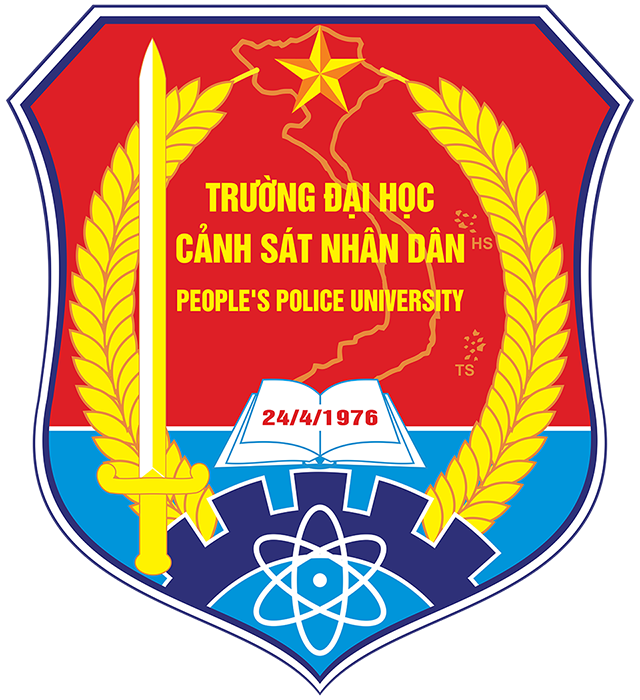
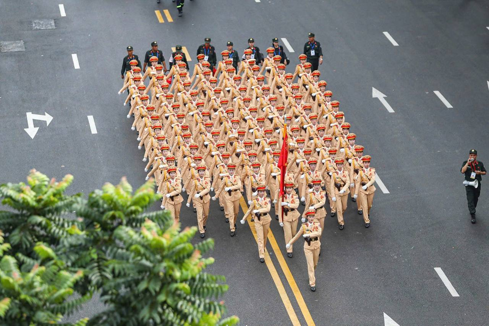

01
CHẤT LƯỢNG ĐÀO TẠOQUALITY EDUCATION
Phát triển năng lực chuyên môn, kỹ năng và phương pháp học tập hiện đại.Professional knowledge, practical skills and modern learning approaches.

PPU · 1976Nửa thế kỷ xây dựng, trưởng thành và cống hiến cho sự nghiệp giáo dục, đào tạo lực lượng Cảnh sát nhân dân.Five decades of dedication to education, training and the development of the People’s Police Force.
Trường Đại học Cảnh sát nhân dân là cơ sở đào tạo thuộc Bộ Công an, tiền thân là Trường Hạ sĩ quan Cảnh sát nhân dân II, được thành lập ngày 24 tháng 4 năm 1976. Qua các giai đoạn phát triển, Nhà trường tiếp tục thực hiện nhiệm vụ đào tạo, bồi dưỡng, nghiên cứu khoa học và hợp tác quốc tế.People’s Police University (PPU), under Viet Nam’s Ministry of Public Security, traces its origins to the People’s Police Non-Commissioned Officer School II, established on 24 April 1976. Its work encompasses police education, professional training, scientific research and international cooperation.
Từ môi trường học tập đến hoạt động cộng đồng và hợp tác quốc tế.From an inspiring learning environment to community service and international cooperation.
Phát triển năng lực chuyên môn, kỹ năng và phương pháp học tập hiện đại.Professional knowledge, practical skills and modern learning approaches.

Rèn luyện tinh thần trách nhiệm và bản lĩnh của người chiến sĩ Công an nhân dân.Strengthening professionalism, responsibility and commitment to public service.

Tăng cường giao lưu học thuật, nghiên cứu và kết nối với các đối tác.Encouraging academic exchange, collaboration and global partnerships.
Những ghi nhận tiêu biểu trong hành trình xây dựng và phát triển.Recognitions that mark the University’s history of service and achievement.
Ngày 19/4/2026, Trường Đại học Cảnh sát nhân dân tổ chức Lễ kỷ niệm 50 năm ngày truyền thống và đón nhận danh hiệu Anh hùng lực lượng vũ trang nhân dân.On 19 April 2026, PPU commemorated its 50th anniversary and received the title of Hero of the People’s Armed Forces.
Tiếp nối truyền thống, Trường Đại học Cảnh sát nhân dân chú trọng đổi mới hoạt động đào tạo, phát triển nghiên cứu khoa học và mở rộng hợp tác, đáp ứng yêu cầu công tác trong bối cảnh mới.
Nhà trường tiếp tục đẩy mạnh:
Những định hướng này góp phần nâng cao chất lượng đào tạo và khả năng thích ứng của đội ngũ cán bộ trong tình hình mới.
Building on its traditions, People’s Police University focuses on educational innovation, scientific research and international cooperation to meet evolving professional needs.
The University continues to promote:
These priorities help strengthen the quality of education and professional readiness for emerging challenges.
ESP AI Chatbot là dự án học liệu hỗ trợ tiếng Anh chuyên ngành, góp phần đưa công nghệ và trải nghiệm học tập tương tác đến gần người học.ESP AI Chatbot is a supporting English-for-Law-Enforcement learning project bringing interactive learning and AI tools closer to students.